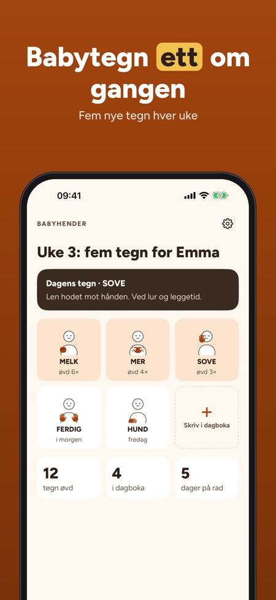
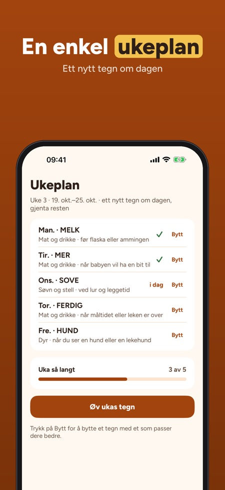

Babyhender hjelper deg å bruke enkle tegn sammen med babyen før ordene kommer, ett lite tegn om gangen i hverdagen. Hvert tegn har en egen tegning med tre enkle trinn.



Babytegn er enkle hverdagsgester du bruker sammen med babyen før ordene kommer. Babyhender viser hvert tegn som en tegning med tre enkle trinn.
Det er 150 babytegn fordelt på 9 kategorier, blant annet mat, søvn, følelser og dyr.
Tegnene er ordnet etter alder, fra 6 til 24 måneder. Appen har også tips til foreldre om når og hvordan dere kan starte.
Tegnene er enkle hverdagsgester tegnet av oss, og mange ligner tegn i norsk tegnspråk. Appen lenker til Tegnordbok for det offisielle tegnet.
30 tegn i 3 kategorier, den første ukeplanen, dagboken og tipsene kan brukes uten kjøp.
Nei. Fullversjonen er et engangskjøp som låser opp alle 150 tegn, nye ukeplaner, sanger, lek og fremgang.
Ja, appen virker uten nett og du trenger ingen konto.
Babyhender hjelper deg å bruke enkle tegn sammen med babyen før ordene kommer – ett lite tegn om gangen, i hverdagen.
30 tegn i 3 kategorier, den første ukeplanen, dagboka og tipsene kan brukes uten kjøp. Fullversjonen er et engangskjøp som låser opp alle 150 tegn, nye ukeplaner, sanger, lek og fremgang. Ikke noe abonnement.
Tegnene er enkle hverdagsgester for babyer, tegnet av oss. Mange ligner tegn i norsk tegnspråk; appen lenker til Tegnordbok for det offisielle tegnet. Babyhender er uavhengig, ikke tilknyttet Statped eller Norges Døveforbund, og gir ikke medisinske råd.